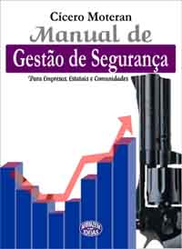

Recebi um e-mail de um oficial da reserva da Polícia Militar de Minas Gerais, divulgando um livro escrito por ele, e desde logo aceitei ajudar divulgando aqui no Caso de Polícia.
Claro que é difícil escrever sobre algo que não conhecemos, no caso um livro que não li, então sem chances de fazer uma resenha. Contudo, creio que o assunto abordado é deveras importante.
Cobrar uma boa prestação de segurança pública, dever do Estado, todos já fazem, nem que seja reclamando de maneira estéril e despreocupada. Mas poucos são os que cuidam de sua própria segurança, ou da de seu próximo. A frieza, o descaso e a falta de respeito com outras pessoas é marca característica da sociedade brasileira, que não olha para o próprio umbigo antes de atirar pedras por aí. Segurança Pública é dever do Estado mas também é responsabilidade de TODOS.
Muitas empresas já se preocupam com o tema. A multinacional onde minha "senhõra" trabalha volta e meia tem palestras sobre o tema.
Bom, reproduzo as informações sobre o livro, cujo título é " Manual de Gestão de Segurança em Empresas, Estatais e Comunidades ". O preço do livro direto na editora é de R$ 49,00.Autor: Cícero Moteran Ramos – 57 anos; especialista em segurança privada, oficial reservista da PMMG, engenheiro e professor de segurança corporativa.
Objetivo: Disseminar conhecimento da ciência e da doutrina da segurança privada buscando melhoria na ambiência da segurança geral, evitando riscos e prejuízos pela não disponibilização ou pela sua alocação equivocada.
Capítulos temáticos: Evolução crítica da segurança; segurança pública; taxa de segurança pública; poder de polícia; segurança privada; armas de fogo; armas não letais; vigilância patrimonial; guarda municipal; segurança empresarial (corporativa); correlação entre investimento e ganho de segurança; segurança eletrônica; videomonitoramento; vigilância comunitária.
Resumo: O livro contempla, de forma didática e pioneira, a interação entre segurança pública e segurança privada, a partir do estudo evolutivo das duas famílias, analisando cada ramo específico da seg. privada quanto a dimensão, interações, atribuições e fronteiras, desde o vigia até o videomonitoramento. Com total embasamento técnico e jurídico o livro conceitua cada segmento da segurança de forma a consolidar conhecimentos e tornar fácil a resposta a algumas perguntas, tais como: Guarda municipal é segurança pública? Qual a diferença entre vigia, porteiro e vigilante? Podemos contratar um vigia de rua? O videomonitoramento agride os direitos individuais constitucionais? Pode o policial exercer a segurança privada? Arma não letal é mais dissuasiva que a arma de fogo? De quem é a responsabilidade pela segurança na empresa? Qual o valor do investimento para se ter segurança? De quem é a responsabilidade pela segurança privada? Todas as seguranças se convergem para uma única? A segurança privada é maior, ou menor que a segurança pública nos países com melhor ambiente de segurança? Todos os ramos da segurança convergem para uma só?
Contato: Editora Armazém de Idéias: Rua Martin de Carvalho 671, Belo Horizonte – MG. Tel 31-3291.0411 E-mails: armazém@gold.com.br ou portadolivro@yahoo.com.br